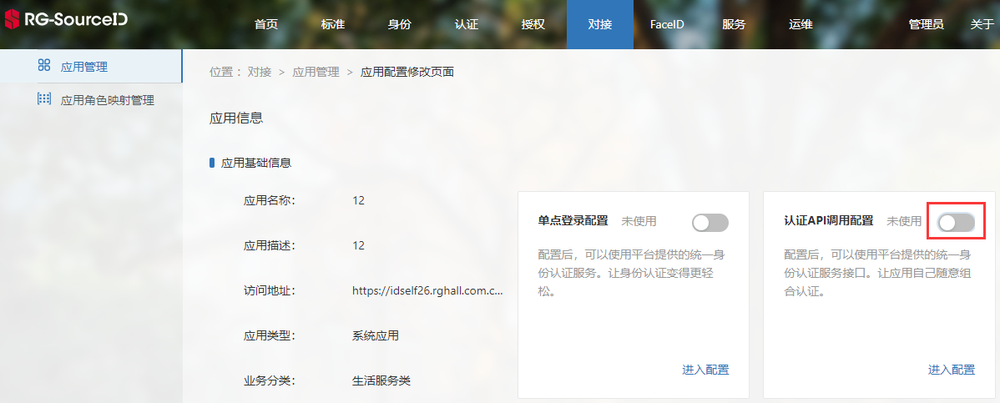
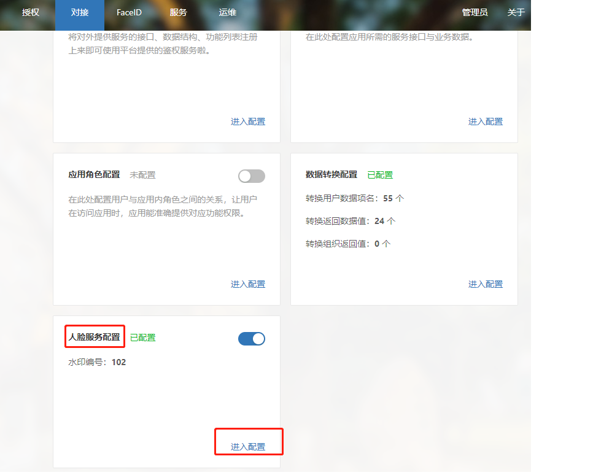
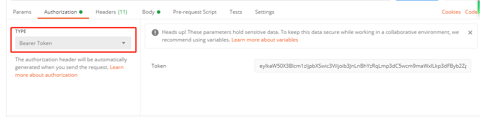

开发前须知
人脸厂商、人脸应用对接
人脸厂商、人脸应用对接主要是SID对接多家厂商或应用（厂商或应用提供SID需要的API，SID进行调用），实现照片分析、认证等功能。
人脸厂商对接，请参考：人脸厂商标准接口
人脸应用对接，请参考：人脸应用标准接口
人脸对外接口应用对接步骤
应用使用SID的人脸服务，即调用人脸对外接口，需在接口调用前进行以下步骤：
STEP 1：管理端注册应用。
STEP 2：认证API调用配置。
“进入配置”，然后进行认证API调用配置。

记录下应用的应用ID、应用秘钥，并启用“认证API调用配置”。


STEP 3：配置人脸服务。
点击人脸服务配置的“进入配置”，进而配置人脸服务。

根据页面导航，配置应用的人脸服务（注：应用同步用户数据、应用数据转换必须配置）

STEP 4：根据应用的应用ID（对应username）、应用秘钥（对应password）获取token，获取方式请参考：获取JWT。

STEP 5：将token加入Header中，测试或对接人脸服务公共接口。
